מבוא
כשאנחנו מגיעים לזירת האירוע,
עלינו לבחון את הסביבה על מנת שנוכל
לאפיין את מצב הפצועים בצורה הטובה ביותר.
עלינו לבחון את הסביבה על מנת שנוכל
לאפיין את מצב הפצועים בצורה הטובה ביותר.
לשם כך נשים לב לקינמטיקה.
מהי קינמטיקה?
מהי קינמטיקה?
קינמטיקה = תורה החוקרת את דרך העברת האנרגיה במהלך תנועה.
עלינו לחשוב על הקינמטיקה:
|
בדרך לאירוע-
|
בהגעה לזירה-
|
| מסיפור המקרה | הסתכלות ותחקור ראשוני של הסביבה |
כאשר נגיע לפצוע טראומה, עלינו להתחיל לחשוד בפציעות ספציפיות על סמך מנגנון הפציעה.
בהתאם לזאת לתכנן את אופן המשך הטיפול בפצוע.
בהתאם לזאת לתכנן את אופן המשך הטיפול בפצוע.

כמו שראינו בדוגמה,
המהירות היא הגורם העיקרי המשפיע על חומרת הפציעה.
טראומה = נזק לרקמות הגוף כתוצאה מפגיעה חיצונית.
ישנם 2 סוגי טראומה:
טראומה קהה
טראומה חודרת
טראומה קהה

טראומה קהה היא מעבר של אנרגיה ללא חדירת עצם לגוף הפצוע.
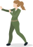
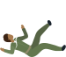
הגורמים הנפוצים לטראומה קהה הם נפילה מגובה ותאונות דרכים.
נפילה מגובה
נפילה מגובה
ישנן 3 שאלות שעלינו לשאול כאשר אנו מטפלים בפצוע נפילה מגובה:
מאיזה גובה נפל הפצוע?
כל פצוע שנפל פי 3 מגובהו או יותר יוגדר כפצוע דחוף לפינוי.
זאת בשל החשד לפגיעה מאסיבית בגלל המהירות הגבוהה שהוא צבר בעת הנפילה.
זוכרים?
מהירות היא המשפיעה ביותר על עוצמת הפגיעה
מהו האיבר הראשון שפגע ישירות בקרקע?
נצפה לפגיעות משמעותיות יותר באיברים אשר עליהם נחת הפצוע ישירות.
על איזה מצע הפצוע נחת?
במידה והפצוע נפל על משטח “רך” (צימחיה, מזרן וכדומה) אנו מסיקים שעוצמת הפגיעה תקטן
ובהתאם לזאת חומרת הפציעות בשל האטת המהירות.
תאונת דרכים
תאונת דרכים
כלי רכב
בתאונת דרכים יש 4 שלבים עד לעצירה מוחלטת של אברי הפצוע
1
התנגשות כלי הרכב בעצם חיצוני
עץ, רכב, קיר, הולכי רגל וכו'.
עץ, רכב, קיר, הולכי רגל וכו'.
הנוסע ששהה בתוך הרכב יספוג את אותם הכוחות אשר ספג הרכב בעת ההתנגשות בעצם החיצוני. התבוננות בנזק החיצוני
שנגרם לרכב תספק מידה רלוונטי להערכת אזורי פציעות הנפגע.
לדוגמה אם צד הרכב של הנהג נפגע, נצפה לפגיעות באיברי צד שמאל של הנהג.
2
התנגשות הנוסעים בחלקו הפנימי של הרכב
הגה, שמשה, דלתות וכו'.
הגה, שמשה, דלתות וכו'.
נחשוד לפגיעות ספציפיות בהתאם לעצמים הפגועים ברכב.

3
התנגשות האיברים הפנימיים בדופן הפנימית של בית
החזה
קריעת האיברים כתוצאה מתאוצה מהירה של האיברים הפנימיים והתנגשותם בדפנות חלל הבטן/ החזה בעת ההתנגשות.
4
פגיעה שניונית מחפצים חדים ברכב
פגיעות חודרות/ קהות בהתאם לחפץ הפוגע.
כאשר אדם ישוב בצורה זקופה
תתרחש לרוב פגיעה
נחשוד ל:
תתרחש לרוב פגיעה
במסלול עילי.
הגוף ממשיך לנוע לפנים ולמעלה לאחר העצירה
נחשוד ל:
|
תאונה חזיתית
|
כאשר שני כלי רכב מתנגשים חזיתית אחד כנגד השני |
|
תאונה קדמית
|
כאשר כלי רכב מתנגש בעצם חיצוני דומם (קיר, עץ וכדו’). |
|
פגיעות ראש, עמש"צ
|
פגיעות חזה ובטן
|
| הראש ייחבט בשמשה של הרכב (סימני קורי עכביש) | בית החזה ייחבט בהגה (המטומות על בית החזה, סימני חגורה על הבטן) |
כאשר אדם "גולש בכיסא"
תתרחש לרוב פגיעה
תתרחש לרוב פגיעה
במסלול תחתי
נחשוד ל:
פלג גוף תחתון ינוע כלפי מעלה וייעצר בהגה/ ב’דשבורד’
פגיעות מהאגן ומטה
שברים בגפיים התחתונות, המטומות באגן.
בתאונה אחורית
נחשוד ל:
כאשר כלי רכב מתנגש ברכב אחר מאחור
פגיעות ראש
פגיעות עמ"ש
פגיעות עמש"צ
בתאונה צידית/סיבובית נחשוד ל:
פגיעות בגוף בהתאם למיקום הפגיעה ברכב
בהתהפכות נצפה ל:
מנגנון משולב של כל סוגי הפגיעות
סיכויי התמותה של מטופל שהועף מרכב
גבוהים פי 6מסיכוייו של המטופל שלא הועף מהרכב
גבוהים פי 6מסיכוייו של המטופל שלא הועף מהרכב
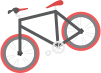
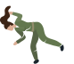
רוכב אופנוע/אופניים חשוףלפגיעות מכל הכיוונים.
בנוסף, ניתן יהיה לצפותלפגיעות דריסהע"י הרכבים.
רוכב אופנוע/אופניים ללא קסדה ומיגון עורי עלול לסבולמפגיעות ראש, כוויות ושפשופים.
בנוסף, ניתן יהיה לצפותלפגיעות דריסהע"י הרכבים.
רוכב אופנוע/אופניים ללא קסדה ומיגון עורי עלול לסבולמפגיעות ראש, כוויות ושפשופים.
הולכי רגל
מבוגרים
הרכב יפגע בגפיים התחתונות, לאחר מכן הגוף יפגע בשמשה ולבסוף ייפול על הכביש.
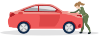
לכן, נצפה לפגיעות משמעותיות מהאגן ומטה.
ילדים
יותר נמוכים ממבוגרים, ולכן ייפגעו באזור פלג גוף עליון.
בנוסף ילדים נוטים להגיב בקפאון עם בפנים אל מול הרכב המתקרב, ולכן לרוב נראה פגיעות בחזית הגוף.
בנוסף ילדים נוטים להגיב בקפאון עם בפנים אל מול הרכב המתקרב, ולכן לרוב נראה פגיעות בחזית הגוף.
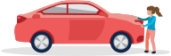
לכן, נצפה לפגיעות משמעותיות מהאגן ומטה.
גם מבוגרים וגם ילדים עלולים להידרס לאחר הפגיעה הראשונית מהרכב!
טראומה חודרת
טראומה חודרת היא מעבר של אנרגיה באמצעות חדירת עצם לגוף הפצוע
בפגיעות חודרות כתוצאה מדקירות סכין, לרוב ייגרם נזק באופן ישיר לאיבר ספציפי.
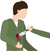
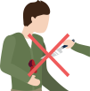
אין להוציאאת הסכין או הרסיס התקוע במידה וישנו.
במקרה של דקירת סכין, חדירת קליע או רסיס לא נדע את העומק או המסלול המדויק של החפץ החודר.
לכן נחשוד לקשת רחבה של פגיעות בהתאם למיקום הפציעה.
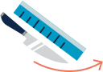
לכן נחשוד לקשת רחבה של פגיעות בהתאם למיקום הפציעה.
פגיעת הדף
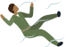
פגיעת הדף מפיצוץ תהיה שילוב של טראומה קהה וטראומה חודרת
ככל שכמות חומר הנפץ תהיה גדולה יותר ו/או חומר הנפץ יהיה נפיץ יותר,
נצפה לראות פציעות משמעותיות יותר בשל אנרגיה
גדולה יותר.
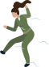
ככל שהמרחק ממוקד הפיצוץ גדל, מהירות גל ההדף יורדת ובשל כך גם עוצמתו.
בחלל סגור, או אפילו בנוכחות קיר יחיד גל ההדף יוחזר ויפגע בפצוע פעם נוספת ובעקבות כך הפציעה תהיה חמורה
יותר.
בשביל שנדע לאילו פציעות אנו צריכים לחשוד אצל פצוע הדף, אנו צריכים להבין את 5
שלבי הפגיעה בפצוע כתוצאה מגל הדף:
1
גל ההדף עצמו, קריעת רקמות חלולות:
נאדיות, כלי דם, מעיים, עור התוף וכו’
נאדיות, כלי דם, מעיים, עור התוף וכו’
2
פגיעות חודרות מעצמים חדים -
רסיסים, ברזלים, מתכות וכו’
רסיסים, ברזלים, מתכות וכו’
3
פגיעות קהות
כתוצאה מהטחת הפצוע על עצמים קשיחים - קיר, קרקע וכו’
כתוצאה מהטחת הפצוע על עצמים קשיחים - קיר, קרקע וכו’
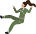
4
כוויות ופגיעות שאיפה

5
פגיעה מחומרים כימיים, קרינה
(פצצות "מלוכלכות")
(פצצות "מלוכלכות")

אודות
ראש מדור טי"ל: רס"ן מיגל לויתן
ניהול הפרויקט: רב"ט גל גנסין
אפיון תוצר הדרכתי: סמל נועה עובדיה
וטור' דרור אברמסון
וטור' דרור אברמסון
תכנות: סמל נועה עובדיה
עיצוב: טור' מייה ליבנה
מומחה תוכן בה"ד 10: סרן רוני ארמון
גירסה: 2020 1.0